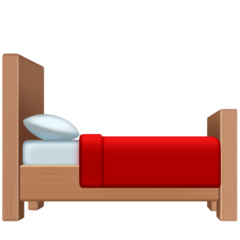
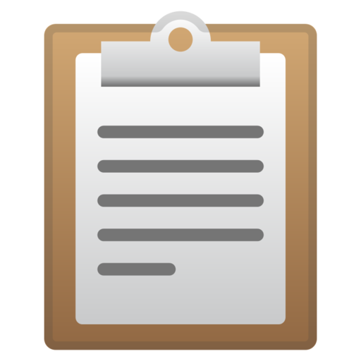
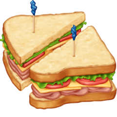
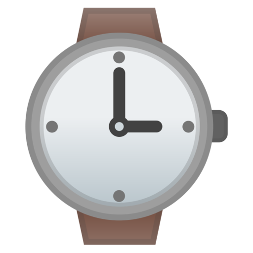

1. Start your day the night before.
→
 Organise your schedule
Organise your schedule
2. Move first thing.
→

Do not stay in bed
3. Tame your brain.
→
Concentrate on task
4. Get help with staying organized.
→

Make checklists
5. Remember to eat.
→

Gain energy, rejuvenate
6. Batch your time.
→

Create study blocks
7. Disconnect from work.
→
Leave work when relaxing